In this lab, we are going to look at ways of documenting the components which comprise a web application, including mapping out the pages that you need using SiteMaps in Figma, and mapping out the content in an Asset Inventory using a spreadsheet application, like Excel or LibreOffice Calc. These activities broadly fall under the UX category of Information Architecture (IA), which has roots in Library science (organizing and prioritizing content), and Cognitive Psychology (making it quick to learn, easy to understand and navigate). Considering this as a larger component of People-Centred Design, this will help us to plan the interactions which users will engage with, to ensure the final application brings the user joy.
Lab 2: Asset Inventories and Site-Maps
ENSE 271 - People-Centred Design - Laboratory
University of Regina - Engineering and Applied Science - Software Systems Engineering
Lab Instructor: Adam Tilson
The highest level view of a website is often expressed as a sitemap.
Visual Sitemap - A hierarchical diagram which you create prior to website implementation which lists all of the pages on your site, nesting child pages under parent pages. This should be done as soon as you have mapped your user journey, e.g. from User Story Mapping, and after (or in parallel) with collecting and categorizing your content, e.g. in an asset inventory.
Reasons for creating a sitemap:
- Consider User Experience (UX) from the beginning, including:
- How will the content be structured?
- How will the user navigate it?
- Additionally, this can help you…
- Understand the site’s goals and purposes
- Understand how to arrange content
- Similar content should be grouped together, e.g. through Card Sorting
- Helps you eliminate redundancies
- Keep team members on the same page about design
- The sitemap becomes a development roadmap
- Confirm all business goals are met
- You can walk through the sitemap with stakeholders
Try to answer:
- What is the user’s need for information?
- Are they looking for something they know is here?
- Are they browsing content to see what is here?
- Do they want as much detail as possible on a specific topic?
- Are they looking to find something again which they previously found?
- How will they find this information?
- Only ~50% of users arrive from the home page
- Many users start on a sub page, e.g. from a web search
- What clear path can they take to get to their goal?
- More important than the
3-click-rule
- More important than the
- Only ~50% of users arrive from the home page
From the answers, you can decide between a flat / wide sitemap, or a deep one.
Card Sorting
- A great activity to figure out how content is logically sorted is Card Sorting
- Write page or content titles on cards
- Shuffle them
- Have a client or user then sort these cards into piles
- The piles show how the user logically groups the content
- Informs which pages should be nested together
Example Sitemap:
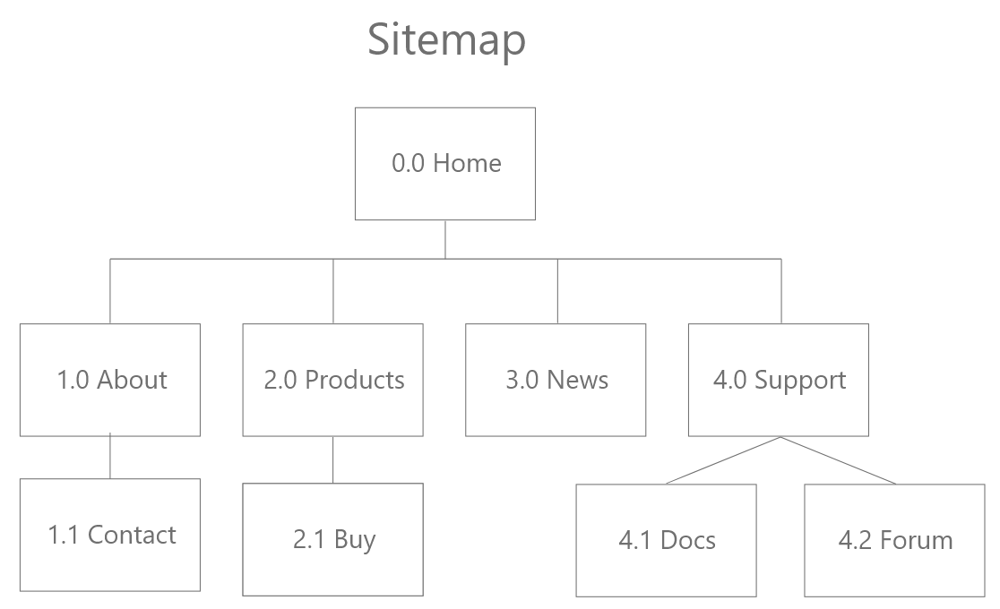
Note on Hierarchies:
The following diagram shows several ways you can draw out wide hierarchies, but just one way to communicate a deep hierarchy. Students occasionally confuse a vertical display of a wide hierarchy for a deep hierarchy, and while it can be confusing, it’s important to understand the difference to interpret others’ maps.
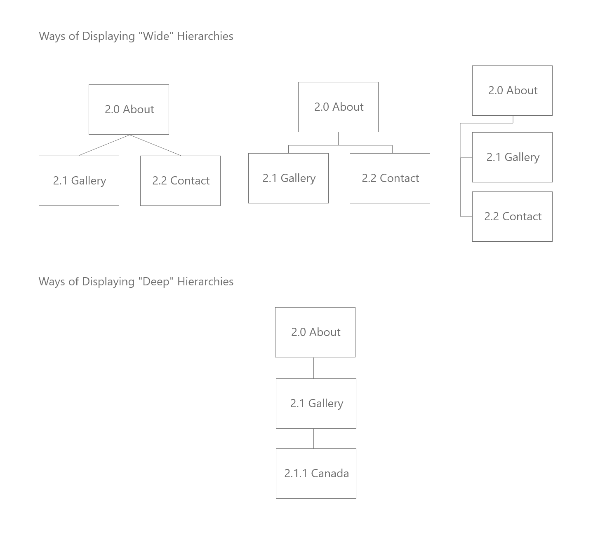
Representing Hierarchy in Design - Breadcrumbs Pattern
The breadcrumbs pattern is a web design principle which lets you see where you are in the hierarchy. This is useful as it can quickly help you move back up the hierarchy in case there is something you missed. For example:
home > tutorials > digital painting > digital impasto techniques > digital impasto brush packs
This can be very helpful if you perhaps discover a brush back from a Google search, but don’t know how to use it (go back one), or just need an overview on digital painting in general (go back two steps.)
Why does Hierarchy Matter - A Case Study
Consider the current University of Regina website, with respect to Software Systems Engineering. Here’s a few places that pages appear relevant to this discipline:
- This page is run by recruitment
- This page is run by the Faculty of Engineering and Applied Science
U OF R HOME > ENGINEERING AND APPLIED SCIENCE > STUDENT > PROGRAMS > SOFTWARE SYSTEMS ENGINEERING
- This page is run by the Faculty of Graduate Studies and Research
Why do you think this is structured like this? Is this good? Bad? Why? What might be the design decisions that lead to this kind of design?
Aside - XML Sitemaps
Note: The Visual Sitemap is not be confused with:
XML Sitemap - Once your website is complete, you should include your sitemap formatted in an XML file. This is for robots, such as search engine webcrawlers, and may help them quickly index your website based on how the pages link together.
- Assets refer to the contents of your web app
text- broadly refers to all text assets-
copy- refers to text assets, written by acopywriter. Copy typically lies somewhere between informational and marketing, in that you are typically trying to persuade the reader to do something, acall to action.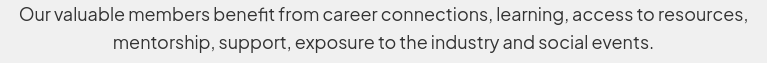
Source: SaskInteractive.com- All text assets should be shared in a Text Document, e.g. Word, so that writers who are not web experts can easily update this.
images- pictures for your website, which may be supplied from an artist or taken from stock photos. Typically separated betweengraphicsandphotographs
e.g. graphics:
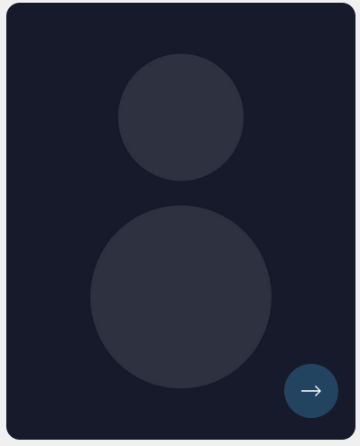
Source: SaskInteractive.com
e.g. photographs:
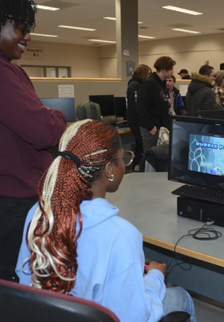
Source: SaskInteractive.com
- Typically images are modified (cropped) and exported as compressed variants for the web. It can be useful to keep the originals in case further changes need to be done later, e.g. photoshop files.
- Some lossless types are used in the web, e.g.
.pngand.svg, but these are not appropriate for photographs
- Some lossless types are used in the web, e.g.
-
other asset types may include
videos,icons,ui elements(buttons),audio,fonts,palettes,databases,scripts,forms, and evenmetadata(data about data, e.g.alt-text). - We will refer to
databaseassets as elements that are generated automatically based on some data structure behind the scenes. This could include, for example:- Products in a Store
- Menu items in a Restaurant
- Member directory
- Blog Posts
- These are compound assets, in that each asset could contain sub assets (a picture, text, etc.)
- Generally I don’t recommend meticulously documenting these assets, since these pages are not necessarily considered evergreen, and are less likely to be updated over time, and are typically handled by external services, e.g. inventory applications to notify when out of stock, membership sign up pages, etc.
- It is increasingly popular to use assets hosted by third party services, such as icons and fonts, with trade-offs to this approach
e.g. Font Awesome icons
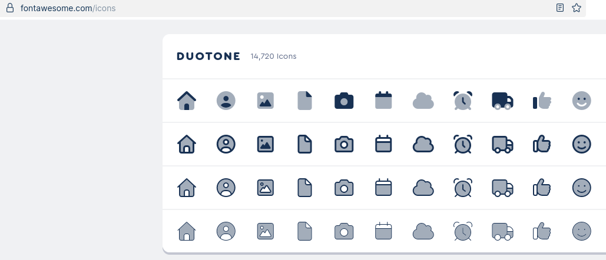
Source: Font Awesome
-
During design the asset inventory should be created before or in parallel the sitemap. This way, you are ensuring that your site structure matches your content, and not the other way around. This is called
content firstdesign. - It is important to track these assets so that, at a glance, one can easily see which assets are found, and which ones are still needed. Highlighting is great for this. It can also be useful to see when assets were last updated, to quickly catch ones that might need an update.
- I like the four step approach:
missing,needs update,ready to deplayandup-to-date.
- I like the four step approach:
-
There are a number of ways in which we can track the assets we have and need. A spreadsheet is a good idea, which can be shared among the team, either by tracking through github, or using a collaborative office software, like Google Docs, Microsoft Office 365 or OnlyOffice.
- This is a living document, which should be updated as you go through your creation process
Example:
Asset Inventory: Pages
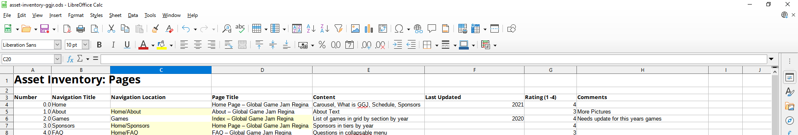
Asset Inventory: Assets
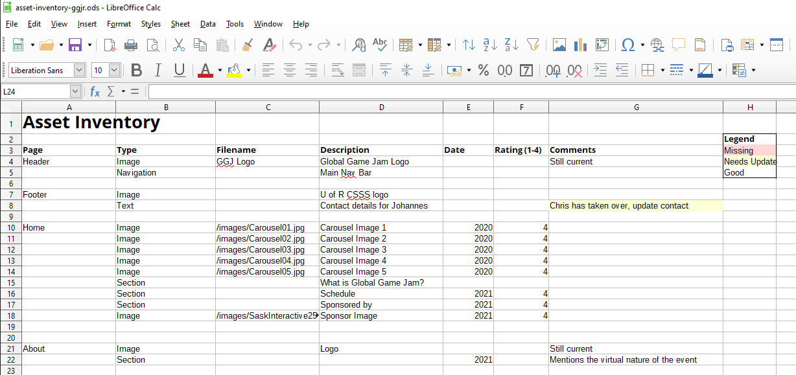
You can grab my template from the example files from URCourses.
Figma is a cloud service which you can use through your browser. I will be using Firefox, but according the help documents here, the following browsers are supported, if properly updated:
- Chrome
- Firefox
- Safari
- Microsoft Edge
(Sorry Internet Explorer fans, time for an upgrade!)
Figma provides free pro features for education purposes, as shown here:
Follow the process here:
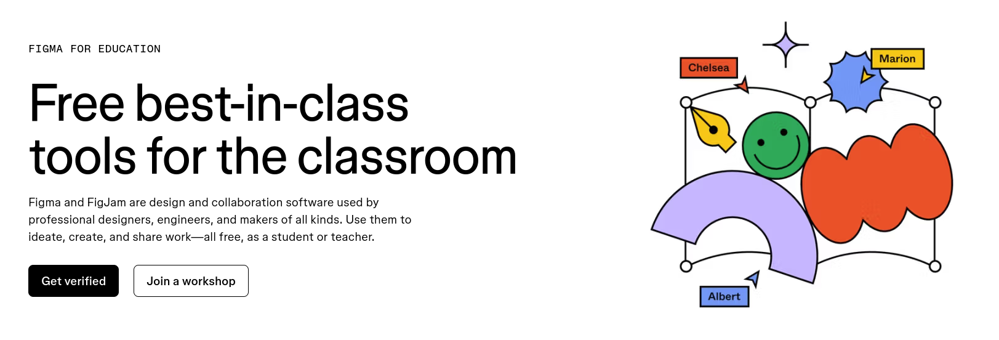
Create an account using your school email.
Here are some sample settings which may help with validation, but you should tailor these as needed for you.
Note - this interface has likely changed, but I haven’t gone through the process in a while to update - Let me know if you have any problems signing up, though I am not sure there is anything I’ll be able to do, but hopefully!
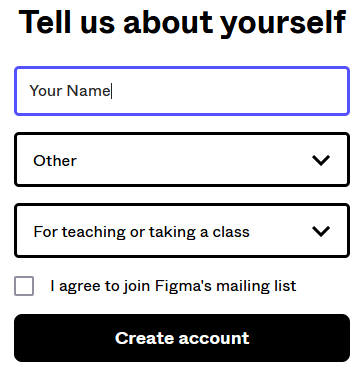
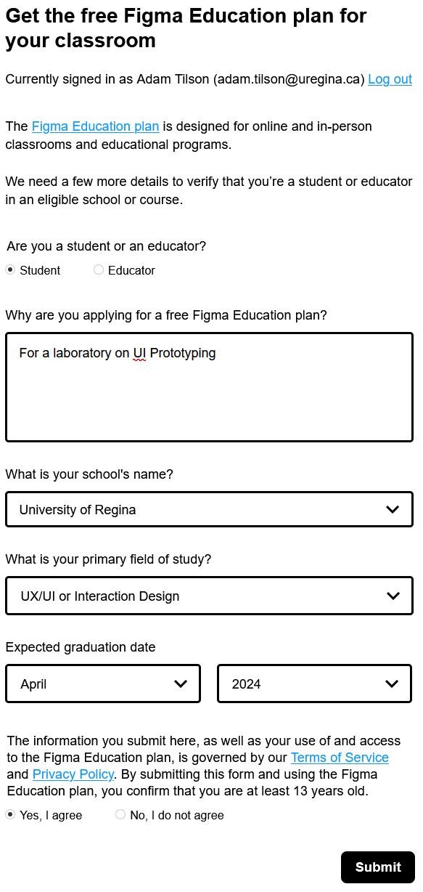
Note: Figma’s free edition allows for Unlimited drafts, but a limit on files which you can collaborate on. Getting verified for education will increase this limit. If you plan to use this primarily for you own projects, and do not plan to collaborate, free is fine, just make sure you save everything in drafts!
Figma has the ability to create both design files and FigJam files. Design are for creating UI mockups, wheras FigJam are for use as Whiteboards and diagramming. We’ll be using design files for this lab:
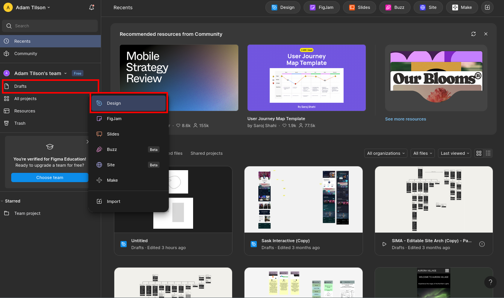
Let’s learn the UI of a design file
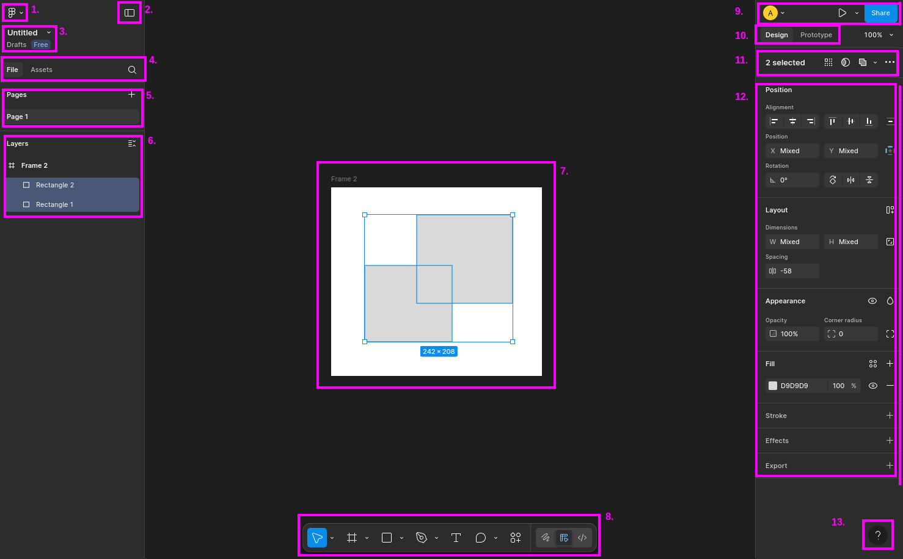
- The file menu is here
- The Figma Icon acts like the top bar menu you would see in typical desktop appliactions
- e.g.
File,Edit,View, etc.
- e.g.
- The Figma Icon acts like the top bar menu you would see in typical desktop appliactions
-
This collapses the left pane
- This is where you can set the filename and see where it is saved
- Your files will automatically get saved in the cloud on Figma’s servers
- To save it locally, instead do a
Figma->File->Save local copy...
-
Switch between File Mode and Assets Mode (not relevant to us)
-
For designs with multiple pages (not relevant to us)
- This region has layers, assets and pages
- Layers
- You can think of placing elements on the page like a paper collage.
- Things placed earlier fall below other things.
- You can use this menu to manually adjust the depth of elements by dragging them up and down.
- You can also group elements together to move them together, toggle visibility, and lock them to prevent accidentally moving them
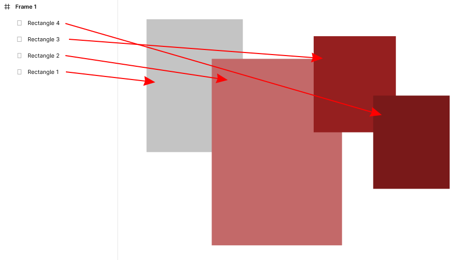
- Assets - The assets tab houses libraries of reusable components to add to your project.
-
Center Stage - this is where you will actually draw and position your objectss
- Tools - this is what you will use to create objects and select them:
- Left to right, we have:
- Selection Tools (
Select,MoveV,ScaleK,HandH) - Frame Tools, which we can use to creates our pages or views (
FrameF,SelectionShift+S,SliceS)- Frames can both represent complete pages, as well as individual component groups
- I tend to prefer the group option instead though - we’ll look at the pros and cons on this later
- Frames can both represent complete pages, as well as individual component groups
- Shape tools, for drawing geometric primitives (
RectangleR,LineL,ArrowShift+L,EllipseO,Polygon,Star,ImageCtrl+Shift+K) - Drawing tools for creating Bézier curves or freehand (
PenP,PencilShift+P) TextTHandH(pan)CommentCActionsCtrl+K- One of my favourite design patterns, if there’s a command you want to perform, but don’t know where it is, you can search for it here. Amazing!- We won’t need the next three tools in this course,
Draw,DesignandDev, and these may be locked to higher account types.
- We won’t need the next three tools in this course,
- Selection Tools (
- Left to right, we have:
- This region has sharing tools, preview tools, and zoom tools
- This area switch modes between
- Design - where we arrange objects in our screen.
- Prototype - where we add interactions to our prototypes. We’ll look at this next week.
- When mutliple objects are selected, some special tools may appear here, like Boolean Operator
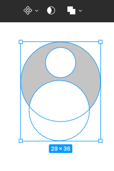
- In this region to you can modify some details about your selected objects. This will update depending on the context of the object selected. e.g. if we have selected text, we will see options like for fonts and text aligning. If we have selected a rectangle, we can modify properties such as the outline color, thickness, and fill color and opacity.
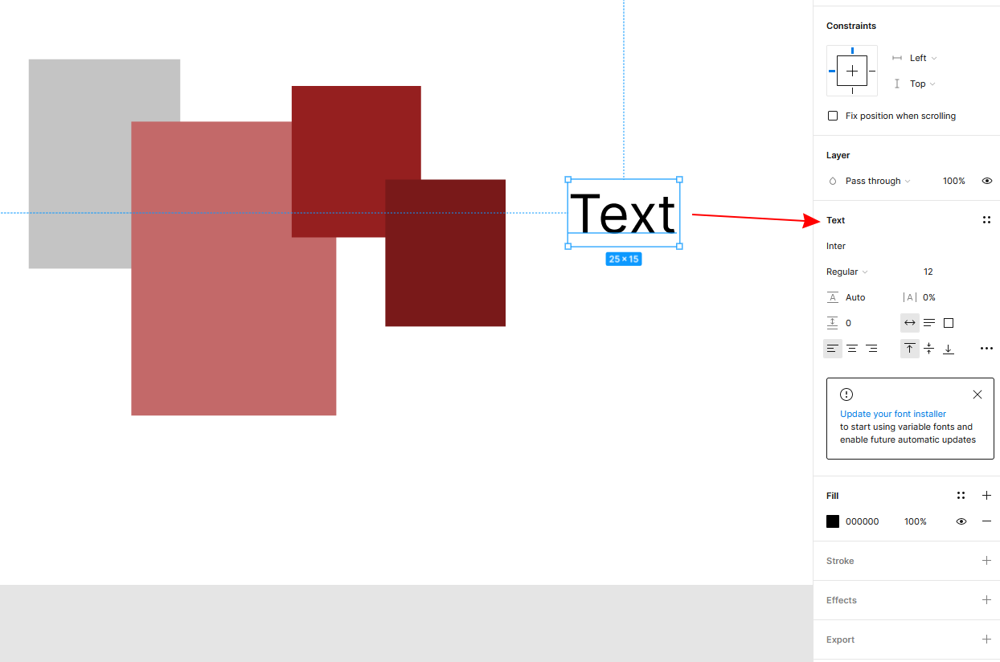
- Get Help
Note, Figma has a mode specially designed for doing quick diagrams like SiteMaps, which is called the FigJam. However, I want you to build your skills using the Design workflow, so we will work there for this portion of the lab! Some things will be more difficult in this mode, but that’s okay.
Quickly sketch up a sitemap:
- Start by drawing a Rectangle
- Select the rectangle tool
- Draw a rectangle in center stage by dragging
- Add some text to the middle of the rectangle
- Select the text tool
- Create a text object on center stage
- Type to add some text
- Drag the text to where you want it
- Guides appear as you drag things around to help you center and match existing spaces
- Once you like the way this looks, copy and paste rectangles and text together as needed
ctrl+dis a shortcut for duplicating what is selected- Then start dragging to move it around
- Connect pages with lines to represent links
- click on the line tool
- Drag from one box boundary to the other
- You can fine-tune positioning by selecting the edge of a line after being placed
- You can also creates lines use the more powerful Pen Tool, which can allow you to later bend or add curves to your lines
Let’s work together to perform a content audit on an existing website, generating an Asset Inventory and also a Sitemap
Competitor Analysis and Content Audit
For this assignment, you are to find a SMALL (I can’t stress this enough!) website, in the range of 3 to 5 pages. Assume you have been tasked to redesign this website - but you must first analyze the existing content.
You are to create a sitemap and an asset inventory for this site as it currently exists.
Be sure to click around. Look for pages which are not listed in the main navigation. When hunting for assets, don’t forget things like icons, text and images. If you see a carousel as a hero banner, list out the images.
- You may, but do not need to, find the actual filename for an image, but could instead choose something appropriate. It is strongly recommended to name your files in the Linux standard format, as linux is the standard for servers on the web:
- lowercase
- separate words with dashes
- brief but descriptive names
- eg.
coffee-with-cream.png
These analysis methods are more suited to static websites. If you find dynamic content, like forums, blog posts or galleries, these do not need to be exhaustively documented in the asset inventory, instead, simply document all of the content for one entry, eg. one blog post, one forum post, etc., and include a database asset.
Include a text file which includes the name of the site which you are documenting
Good types of websites to analyze: Personal CVs / portfolio pages, small organization pages, single product websites
*** Look through a website first to get a rough idea of the amount of work before committing to document it - I’m not trying to take up too much of your time with this assignment, just give you some practice using the techniques and tools discussed.
Please submit your files on URCourses by the due date, in one .zip file. Include a readme.md file which includes the name of the site which you are documenting, your sitemap as a .png, and your spreadsheet as an .xlsx or .ods.
Example directory (zipped):
a-tilson-sid-ense271-l2.zip
├── readme.md
├── sitemap.png
└── asset-inventory.ods
N. Babich, Sitemaps & Information Architecture (IA), XD Ideas, Adobe, 2019
P. Klancar, An Excellent Beginner’s Guide To Information Architecture, Career Foundry, 2020
E. Key, Prototyping a WordPress Project in Adobe XD, Linda from LinkedIn, 2019